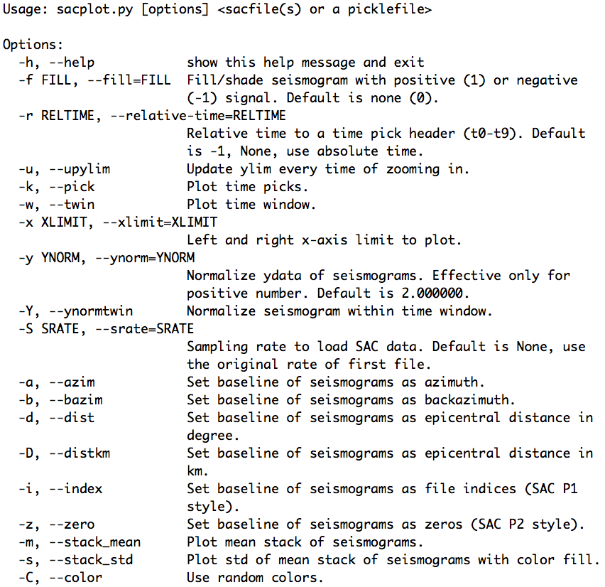
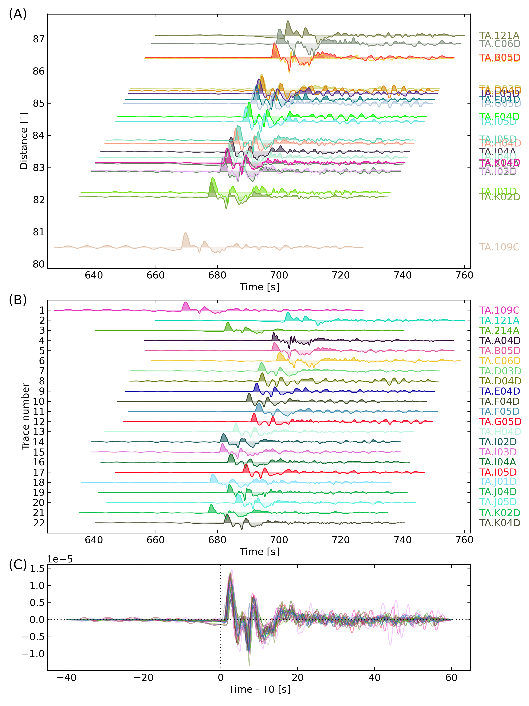
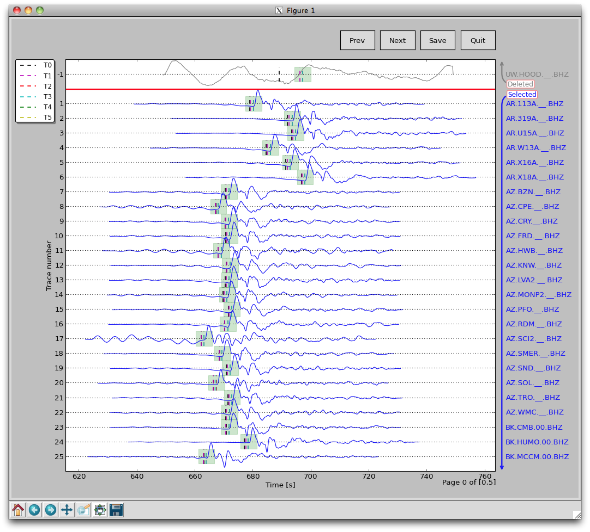

9. SAC Data Access¶
NOTE: All .sac files must include origin time, hypocenter, as well as station coordinates and elevation in their headers.
9.1. Python Object for SAC File¶
The pysmo.sac package is developed to read and write individual SAC files.
The Python class sacfile of module sacio opens a SAC file and returns an object including data and all SAC header variables as their attributes. Modifications of object attributes are saved to file. It is written purely in Python so that it also runs with Jython.
9.1.1. egsac.py¶
The <pkg-install-dir>/aimbat/scripts/egsac.py script gives a simple example to read, resample, and plot a seismogram using pysmo, Scipy, and Matplotlib. You can type the codes in a Python/iPython shell, or run as a script in the data example directory <pkg-install-dir>/data-example/example_pkl_files/Event_2011.09.15.19.31.04.080, hereafter referred to as <example-event-dir>.

9.1.2. Resampling Seismograms¶
In this example, a SAC file named TA.109C.\_\_.BHZ.sac is read in as a sacfile object. The time array is calculated from SAC headers. The data array is resampled from interval 0.025 to 2.0 seconds using Scipy’s signalprocessing module.
Add the following codes to write the resampled seismogram to file TA.109C.\_\_.BHZ.sac:
sacobj.delta = deltanew
sacobj.npts = nptsnew
sacobj.data = y2

9.2. Python Pickle for SAC Files¶
The pysmo.sacio module converts SAC files to sacfile objects. Any modification of the objects are instantly written to files. In data processing, the user may want to abandon changes made earlier, which brings the need of a buffer for the sacfile objects.
The SacDataHdrs class in the pysmo.aimbat.sacpickle module is written on top of pysmo.sacio to serves this purpose by reading a SAC file and returning a sacdh object that is very similar to the sacfile object. Essentially, the sacdh object is a copy of the sacfile object in the memory, except that SAC headers ‘t0-t9’, ‘user0-user9’, and ‘kuser0-kuser2’ are saved in three Python lists.
A gsac object of the SacGroup class consists of a group of sacdh objects from event-based SAC data files, earthquake hypocenter information, and station locations.
An additional step is required to save changes in the gsac object to files.
In order to avoid frequent SAC file I/O, the pickle/cPickle module is used for serializing and de-serializing the gsac object structure. Thus the data processing efficiency is improved because reading and writing of SAC files are done only once each before and after data processing. Script sac2pkl.py does the conversions between SAC files and Python pickles.
Its usage message can be printed out by running at command line:
sac2pkl.py -h
and the result is displayed in the figure below. For example, in the data example directory <example-event-dir>, run:
sac2pkl.py -s *Z -o 20110915.19310408.bhz.pkl -d 0.025
to read 163 vertical component seismograms at a sample interval of 0.025 s and convert to a gsac object, which is saved in the pickle file 20110915.19310408.bhz.pkl.
To save disk space, compressed pickle files in gz and bz2 formats can be generated by:
sac2pkl.py -s *Z -o 20110915.19310408.bhz.pkl -d 0.025 -z gz
sac2pkl.py -s *Z -o 20110915.19310408.bhz.pkl -d 0.025 -z bz2
at the cost of more CPU time.
After processing, run:
sac2pkl.py 20110915.19310408.bhz.pkl -p
to convert the pickle file to SAC files.
See the doc string of pysmo.aimbat.sacpickle by typing in a python console:
from pysmo.aimbat import sacpickle
print sacpickle.\_\_doc\_\_
and also the documentation on pickle for more information about the Python data structure, pickling, and unpickling.
9.3. SAC Plotting and Phase Picking¶
SAC plotting and phase picking functionalities are replicated and enhanced based on the GUI neutral widgets (such as Button and SpanSelector) and the event (keyboard and mouse events such as key\_press\_event and mouse\_motion\_event handling API of Matplotlib.
They are implemented in two modules, pysmo.aimbat.plotphase and pysmo.aimbat.pickphase, which are used by corresponding scripts sacplot.py and sacppk.py executable at command line. Their help messages are displayed in the figures below.
9.3.1. SAC Plotting¶
Options “-i, -z, -d, -a, and -b” of sacplot.py set the seismogram plotting baseline as file index, zero, epicentral distance in degrees, azimuth, and back-azimuth, respectively.
The user can run sacplot.py directly with the options, or run individual scripts
sacp1.py, sacp2.py, sacprs.py, sacpaz.py, and sacpbaz.py, which preset the baseline options and plot seismograms in SAC p1 style, p2 style, record section, and relative to azimuth and back-azimuth. The following commands are equivalent:
sacplot.py -i, sacp1.py
sacplot.py -z, sacp2.py
sacplot.py -d, sacprs.py
sacplot.py -a, sacpaz.py
sacplot.py -b, sacpbaz.py
Input data files need to be supplied to the scripts in the form of either a list of SAC files or a pickle file that includes multiple SAC files. For example, a bhz.pkl file is generated from 22 vertical component seismograms TA.[1-K]*Z by running:
sac2pkl.py TA.[1-K]*BHZ -o bhz.pkl -d0.025
in the data example directory <example-event-dir>. Then the two commands are equivalent:
sacp1.py TA.[1-K]*Z
or:
sacp1.py bhz.pkl
For large numbers of seismograms, the pickle file is suggested because of faster loading.
Besides using the standard sacplot.py script, the user can modify its getAxes function in their own script to customize figure size and axes attributes. Script egplot.py is such an example in which SAC p1, p2 styles and record section plotting are drawn in three axes in the same figure canvas. Run:
egplot.py TA.[1-K]*Z -f1 -C
at command line to produce the figure below.
The “-C” option uses random color for each seismogram. The “-f1” option fills the positive signals of waveform with less transparency. In the script, “opts.ynorm” sets the waveform normalization and “opts.reltime=0” sets the time axis relative to time pick t0.
An improvement over SAC is that the program outputs the filename when the seismogram is clicked on by the mouse. This is enabled by the event handling API and is mostly introduced for use in SAC p2 style plotting when seismograms are plotted on top of each other. It is especially useful when a large number of seismograms create difficulties in labeling.
Another improvement is easier window zooming enabled by the SpanSelector widget and the event handling API. Select a time span by mouse clicking and dragging to zoom in a waveform section. Press the ‘z’ key to zoom out to the previous time range.
9.4. SAC Phase Picking¶
SAC plotting (pysmo.aimbat.plotphase) does not involve change in data files, but phase picking (pysmo.aimbat.pickphase) does. A GUI is built for the user to interactively pick phase arrival times. The figure below is an example screen shot running:
sacppk.py 20110915.19310408.bhz.pkl -w
in the data example directory <example-event-dir>.
Following SAC convention, the user can set a time pick by pressing the ‘t’ key and number keys ‘0-9’. The x location of the mouse position is saved to corresponding SAC headers ‘t0-t9’.
Time window zooming in pysmo.aimbat.pickphase is implemented in the same way as in pysmo.aimbat.plotphase to replace SAC’s combination of the ‘x’ key and mouse click.
Zooming out key is set to ‘z’ because the ‘o’ key is used for another purpose by Matplotlib.
The filename printing out by mouse clicking feature is also available in pysmo.aimbat.pickphase.
A major improvement over SAC is picking a time window in addition to time picks. Pressing the ‘w’ key to save the current time axis range to two user-defined SAC header variables. A transparent green span is plotted within the time window, as shown in the figure below.
Another major improvement involves quality control with convenient operations to (de)select seismograms. In the GUI above, there are two divisions of selected and deleted seismograms. Selected seismograms with a positive trace number are displayed with blue wiggles, while deleted seismograms with negative trace numbers are plotted in gray. The user can simply click on a certain seismogram to switch the selection status, either to exclude it or bring it back for inclusion. The trace selection status is stored in a user-defined SAC header variable.
In SAC, command ppk p 10 plots 10 seismograms on each page. Pressing the ‘b’ and ‘n’ keys to navigate through pages. The number of seismograms plotted on each page is controlled by command line option:
-m maxsel maxdel
for sacppk.py. The Prev and Next buttons are for page navigation and the Save Button saves the change in time picks and time window to files. The default values for maxsel and maxdel are 25 and 5, which means a maximum of 30 seismograms on each page.
In the figure displayed, there are 26 seismograms on the first page because only 1 seismogram is deleted. On the next page, there are 30 selected seismograms. To plot 50 seismograms on each page, run:
sacppk.py 20110915.19310408.bhz.pkl -w -m 45 5
and there would be 4 total pages and 13 seismograms on the last page.
To plot seismograms relative to time pick t0 and fill the positive and negative wiggles of waveform, run:
sacppk.py 20110915.19310408.bhz.pkl -w -r0 -f1
To sort seismograms by epicentral distance in increase and decrease orders, run:
sacppk.py 20110915.19310408.bhz.pkl -w -sdist
sacppk.py 20110915.19310408.bhz.pkl -w -sdist-
Sorting by azimuth and back-azimuth is similar:
sacppk.py 20110915.19310408.bhz.pkl -w -saz
sacppk.py 20110915.19310408.bhz.pkl -w -sbaz
The help message of the iccs.py script is shown below:
The help message of the mccs.py script is shown below: